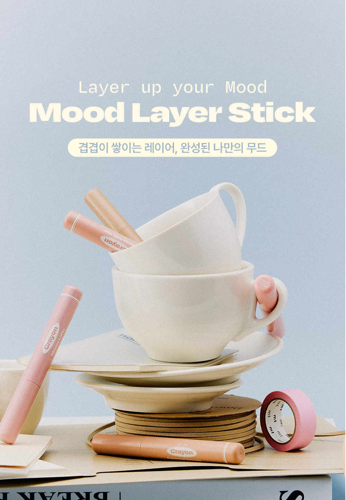
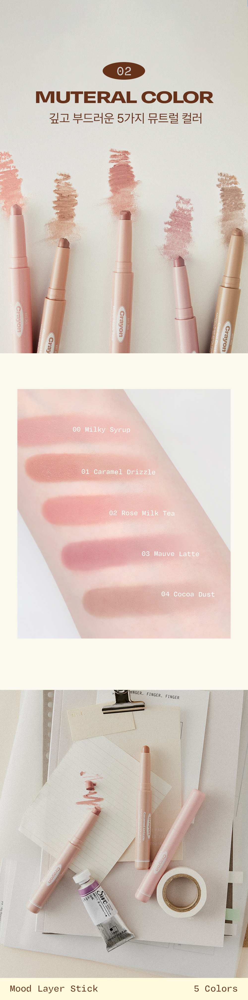
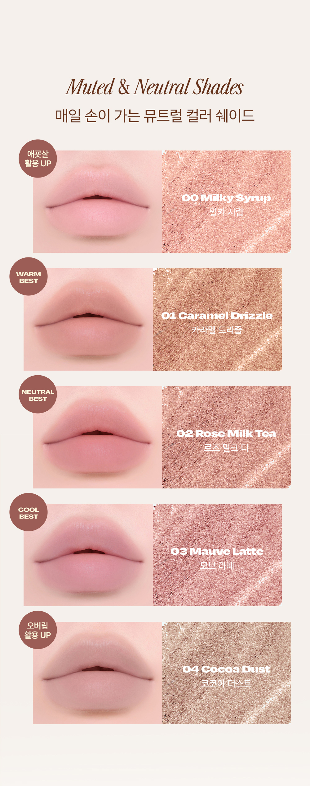
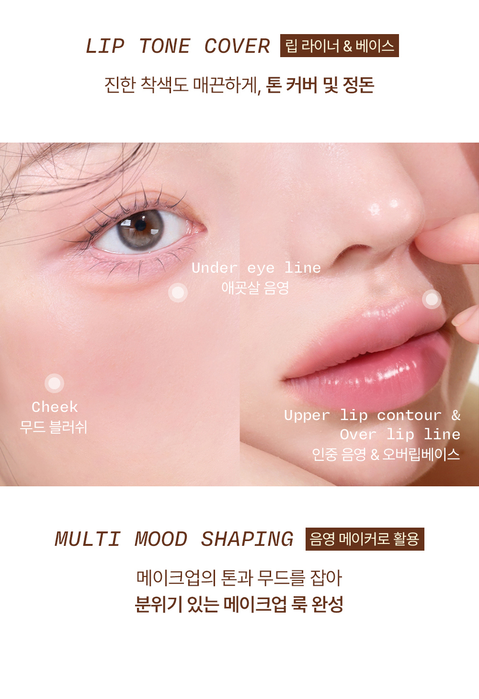
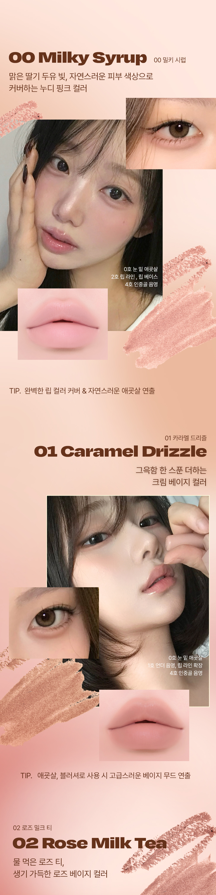

Layer up your Mood
겹겹이 쌓이는 레이어,
완성된 나만의 무드
오늘 소개할 제품은 얼터너티브스테레오의 무드 레이어 스틱 크레용입니다. 일상의 아날로그 감성을 담는 브랜드답게 크레용을 닮은 패키지가 눈에 띄는 제품이에요.
이름처럼 메이크업에 레이어를 더하는 멀티 스틱으로, 립 베이스부터 치크, 애교살, 음영까지 하나로 연출할 수 있습니다.
제품 한눈에 보기
뮤트럴 컬러
스프레드
레이어링
스틱

무드 레이어 스틱의 세 가지 포인트
MULTI MOOD STICK
단순한 립 베이스를 넘어 아이, 치크 무드까지 레이어 업합니다.
원펜슬로 충분한 TONE & MOOD. 립, 치크, 애교살을 스틱 하나로 연출할 수 있어 파우치가 가벼워져요.MUTERAL COLOR
깊고 부드러운 5가지 뮤트럴 컬러로 구성되어 있습니다.
뮤트와 뉴트럴 사이의 채도라 피부 위에서 튀지 않고, 웜톤과 쿨톤 모두 고를 수 있는 컬러가 있어요.SILKY SPREAD TEXTURE
피부에 녹아들 듯 부드러운 블렌딩이 특징입니다.
스틱 타입이지만 뻑뻑하지 않게 미끄러지듯 발리고, 손끝으로 펴면 내 피부톤과 자연스럽게 어우러져요.5가지 뮤트럴 컬러 발색
Muted & Neutral Shades. 채도를 한 톤 눌러 매일 손이 가는 컬러들로 구성했습니다. 컬러를 누르면 해당 발색으로 이동해요.

맑은 딸기 두유 빛의 누디 핑크입니다. 자연스러운 피부 색상으로 입술 톤을 정리해 줍니다.
애교살, 립 베이스
그윽함 한 스푼을 더하는 크림 베이지입니다. 블러셔로 쓰면 고급스러운 베이지 무드가 연출돼요.
치크, 언더 음영, 립 라인 확장
물 먹은 로즈 티 같은, 생기 가득한 로즈 베이지입니다. 본래 입술색과 가까워 오버립을 처음 시도하는 분께 추천합니다.
오버립, 립 라인, 치크
미지근하고 멀멀한 뮤티드 모브입니다. 쿨톤의 오버립과 눈가 포인트에 잘 어울립니다.
오버립, 눈두덩이 음영, 치크
차분한 코코아 브라운입니다. 입꼬리와 인중 음영, 오버립 라인 정리에 활용하기 좋습니다.
인중 음영, 오버립 라인, 코 쉐딩
이렇게 활용해 보세요
LIP TONE COVER
립 라이너 & 베이스로 쓰면 진한 착색도 매끈하게 톤 커버하고 정돈합니다.
MULTI MOOD SHAPING
음영 메이커로 쓰면 메이크업의 톤과 무드를 잡아 분위기 있는 룩을 완성합니다.

- 00 밀키 시럽을 눈 밑 애교살에 가볍게 그어 줍니다.
- 02 로즈 밀크 티를 입술 라인보다 살짝 넘겨 그린 뒤 손끝으로 펴 줍니다.
- 같은 컬러를 볼 중앙에 두 번 찍어 블렌딩하면 치크까지 완성돼요.
- 04 코코아 더스트로 인중과 입꼬리에 음영을 더해 줍니다.

얼터너티브스테레오의 카라멜 글레이즈를 위에 덧바르면 광까지 더할 수 있습니다. 톤별 추천 조합은 아래와 같아요.
+ 카카오 50%
+ 토피 로즈
+ 솔티드 핑크
구매처
가격과 할인율은 공식몰 기준이며 시점에 따라 달라질 수 있습니다. 링크를 누르면 새 창에서 상품 페이지가 열려요.
한 겹씩 쌓이는 음영,
나만의 무드를 완성
스틱 하나로 립, 치크, 음영까지 연출하고 싶은 분께 무드 레이어 스틱 크레용을 추천합니다.
본 포스팅은 얼터너티브스테레오로부터 제품과 원고료를 제공받아 직접 사용 후 작성되었습니다.